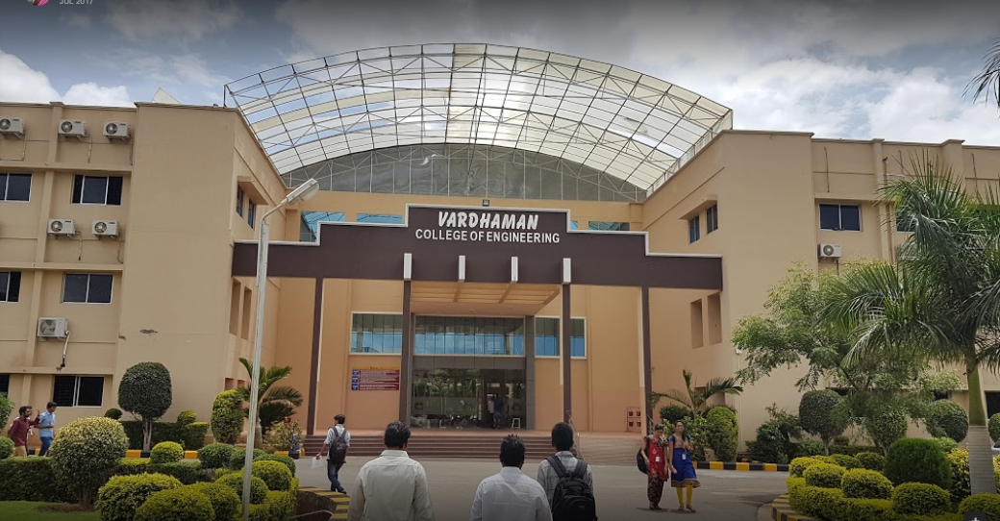
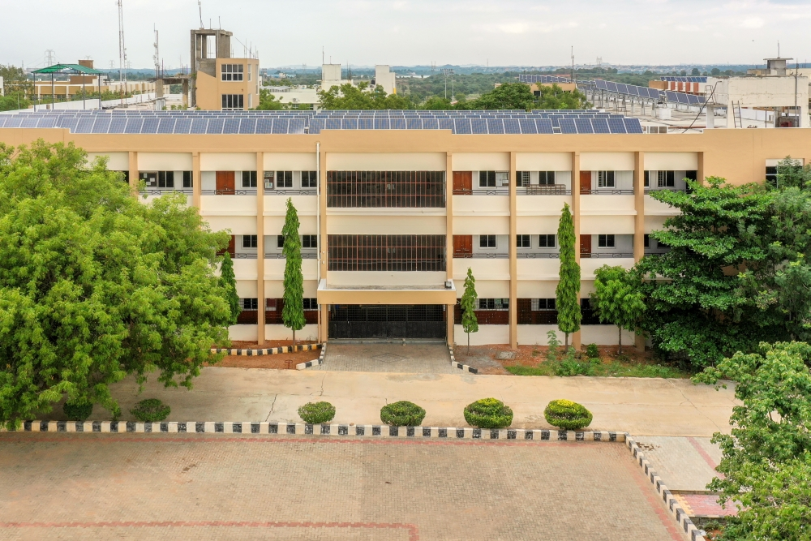

Vardhaman College of Engineering
Vardhaman College of Engineering was established in 1999. It is affiliated with Jawaharlal Nehru Technological University, Hyderabad (JNTUH),[1] and was approved by the AICTE, New Delhi. It is accredited by the National Board of Accreditation[2] and also by the National Assessment and Accreditation Council(3.24/4). UGC,[3] (university grants commission) awarded autonomous status to the college.
It is located about 10 kilometres (6.2 mi) from Shamshabad, near Hyderabad, Telangana, India.
Courses
It offers graduate and post graduate courses to students.
B.Tech in
Computer Science Engineering
Computer Science Engineering (Artificial Intelligence & Machine Learning)
Computer Science Engineering (Artificial Intelligence & Data Science)
Information Technology
Electronics and Communication Engineering
Electrical and Electronics Engineering
Mechanical Engineering
Civil Engineering
The PG courses include:
M.Tech in
Computer Science and Engineering
Digital Electronics and Communication Systems
Power Electronics and Electrical Drives
Engineering Design
Structural Engineering
M.B.A. (Master of Business Administration)

CVR College of Engineering
The CVR College of Engineering was established in 2000. It is approved by the All India Council for Technical Education and accredited by the National Board of Accreditation, India. CVR College of Engineering was affiliated with Jawaharlal Nehru Technological University, Hyderabad
Bachelor of Technology
Departments:
ECE
EEE
EIE
CSE
IT
CSIT
Mechanical
H&S
Civil
ED Cell
M.Tech
VLSI Design
Embedded Systems
Computer Science
Computer Science and Engineering
Electrical Power Engineering
Wireless Mobile and Communication
Artificial Intelligence
Data SciencesSpread over a built-up area of over 36000 square metres on a 32-acre (130,000 m2) campus, the college has 71 classrooms, 23 professors' rooms, 60 teachers' rooms, six air-conditioned conference rooms, 40 labs, and about 1280 computer systems, supported by UPS and continuous power back-up from generators.
There are 1186 computers in the departments.
The college has an ELCS (English Learning and Communication Skills) lab.
There is a three-story building for the exclusive use of library and postgraduate research facilities. The CVR library has 35,000 books and 280+ journals (including IEEE Journals).
The auditorium, seating 1500 people, is used for workshops, conferences and seminars organized by the college and is fully air-conditioned.
A fleet of around 57 buses serve the college from all parts of the city.
The canteen provides food to students and staff.
Activities